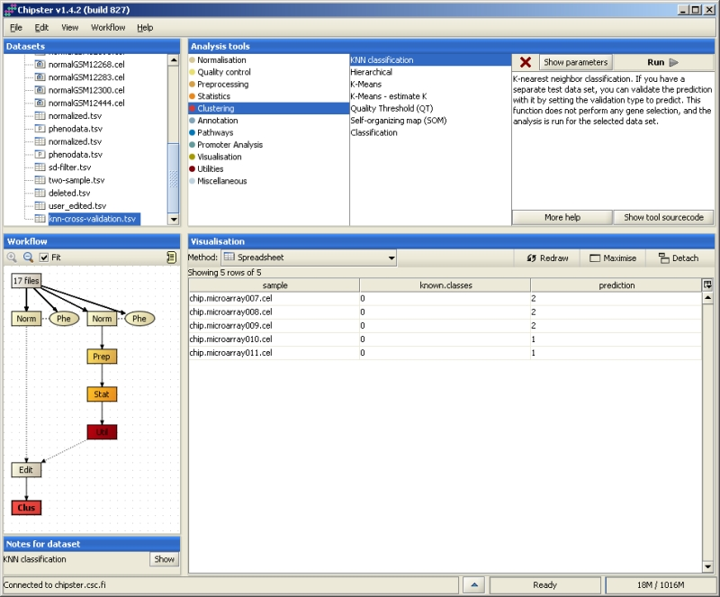

Clustering / KNN-classification
Description
Classification allows you to assign unknown samples to different groups. The classic example of KNN classification is the study by Golub et al., where leukemia samples were classified
into two groups. In general classification consists of several steps:
- Using a set of known samples (training set), build a classifier i.e. a set of genes which best differentiate between two (or more) groups.
- Test the performance of the classifier by using a separate test set of known samples, or by cross-validation.
In cross-validation one sample is removed from the training set and the performance of the classifier is tested
with that sample. This is repeated for all the samples.
- Use the classifier to predict the group for new, unknown samples.
Chipster's KNN-classification allows you to do steps 2 and 3. For selecting the group of genes to be used (step 1), please run a statistical test (e.g. two-group test)
on your training set before this tool.
Parameters
- Number of nearest neighbors (1-1000) [2]
- Number of votes (0-1000) [2]
- Validation type (crossvalidate, predict) [crossvalidate]
Details
For running the KNN-classification tool, you need to add a column called "training" in the phenodata file. This column is used for indicating
which samples belong to the training set (code them with 1) and which samples belong to a separate test set or need to be classified (code them with 2).
If you want to validate the classifier with a test set or classify new samples, set the validation type parameter to "predict".
You can also define how many nearest neighbors are used in the classification.
Results depend heavily on this number, and it is best to try several different settings. It is also possible to
modify the number of votes needed to give a classification for a sample. If the number of samples voting for
a certain group is larger than this parameter, the sample is assigned to that group.
When classifying new samples, you can proceed the following way:
- Import the raw data files for all the samples (training set and the ones to be classified) to Chipster.
- Normalize the samples of the training set together and run filtering and a statistical test for them.
- Transform the resulting data file to a list of identifiers by removing the data columns: Run the tool Utilities / Delete columns with following parameters:
column1: chip.microarray001.cel, column2: FC, deletion.type: between.
- Go back to the raw data and normalize now all the samples together. In the phenodata, mark the samples to be classified with 0 in the group column and 2 in the training column (the training samples
are marked according to their group in the group column and with 1 in the training column).
- Select the normalized whole data and the identifier list and use the Venn diagram visualization to create a new data set which contains expression data for the listed genes.
- Run the KNN-classification tool for the new data set so that you set the validation type parameter to "predict".
Your workflow view should look like this:

Output
A file listing all the samples, their known and their predicted classes.